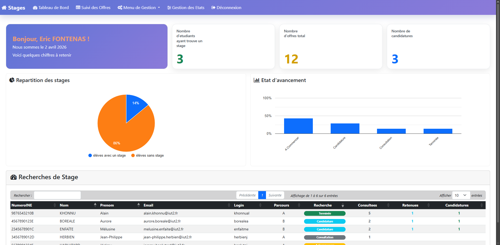
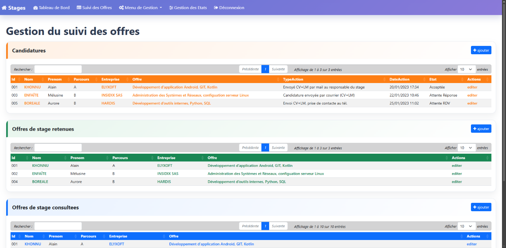
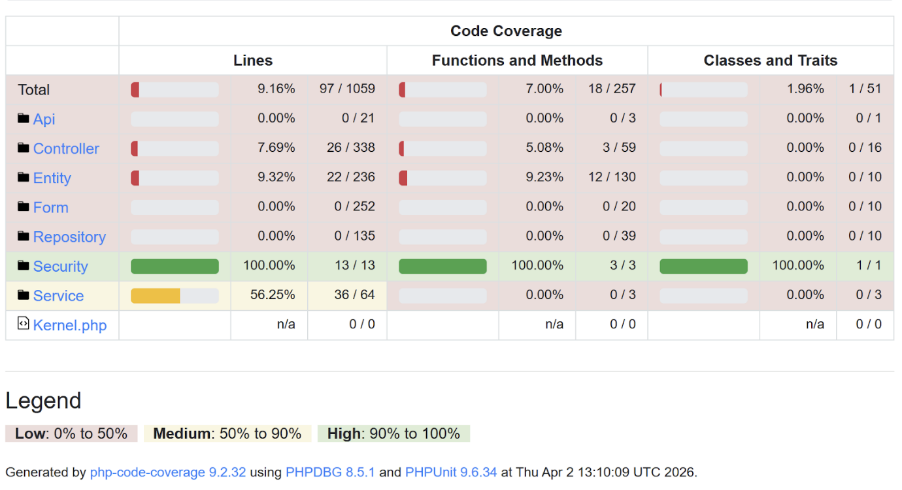

Pour ce projet, nous devions reprendre une application de suivi de recherche de stage déjà existante pour l'améliorer. Il y avait une application mobile, un site web et une base de données. De mon côté, je me suis concentré sur l'application mobile Android et sur la mise en place de tests pour m'assurer que tout fonctionnait bien de bout en bout.
SAE 4.REAL.01 — Développement d'une application complexe, S4 BUT Informatique.
Prendre une application existante, voir ce qui n'allait pas, et l'améliorer. L'idée était de la rendre plus agréable à utiliser, plus rapide et plus fiable pour les étudiants cherchant un stage.
L'application est découpée en trois morceaux qui discutent ensemble : une application mobile pour les étudiants (sur Android), un site web pour l'administration (en Symfony) et une base de données pour tout stocker.
Nous étions 6 étudiants, divisés en deux équipes de 3 : l'une s'occupait du site web, et l'autre (la mienne) de l'application mobile. On faisait souvent des points pour s'assurer qu'on allait tous dans la même direction.
Deux sous-groupes de trois, répartis selon les compétences de chacun.
Restructuration de l'architecture Symfony (contrôleurs, services, repositories, entités), refonte des interfaces (tableau de bord, suivi des offres) et mise en conformité avec les standards d'accessibilité.
Nous avons refait une beauté à l'application Android pour qu'elle soit plus simple à utiliser pour les étudiants. Nous avons aussi créé des tests automatisés pour vérifier que l'application ne plante pas lors de son utilisation normale.
Dans mon équipe, je me suis occupé de rendre l'application Android plus jolie et plus pratique, mais mon gros morceau a été la création des tests automatisés pour s'assurer que tout marchait bien du début à la fin.
La démarche suivie sur la partie sur laquelle j'ai travaillé.
On a commencé par regarder l'application qu'on nous avait donnée. C'était un peu le bazar : on se perdait facilement, les boutons n'étaient pas toujours à la même place d'un écran à l'autre, et visuellement, ce n'était pas très harmonieux.
On a remis de l'ordre dans tout ça. On a créé une vraie barre de navigation, on a remis les boutons au bon endroit, on a ajouté des couleurs pour voir d'un coup d'œil où en étaient nos candidatures, et on a ajouté des petits messages de confirmation ("Candidature ajoutée !").
Plutôt que de tester des petits bouts de code isolés, on a préféré créer des tests qui simulent un vrai utilisateur : le test ouvre l'application, tape des identifiants, clique sur des boutons et vérifie que ça marche vraiment de bout en bout.
La magie avec ces tests automatisés, c'est que quand ils plantent, ça nous montre exactement où l'application est fragile. Ça nous a permis de découvrir que parfois le serveur répondait trop lentement, et on a pu corriger le code pour qu'il gère mieux ces retards.
Captures issues du rapport final — back-office web et rapport de tests.



Application Android en Java (architecture MVC), interfaces définies en XML, appels réseau via Retrofit vers l'API du back-office.
Stratégie de tests d'interface priorisée sur les parcours critiques : navigation, authentification et gestion des erreurs réseau.
Framework Symfony / API Platform suivant le modèle MVC, ORM Doctrine, vues Twig — exposant l'API consommée par l'application mobile.
PostgreSQL, avec une réflexion de normalisation vers la 3e forme normale (3FN) menée en parallèle par le sous-groupe web.
Image Docker basée sur PHP 8.4, avec Composer 2 et les dépendances nécessaires à la connexion PostgreSQL, pour un environnement portable.
Audit basé sur les critères de Bastien & Scapin et sur la norme ISO 25000, avec mesure d'acceptabilité via score SUS et protocole « Think Aloud ».
Ce projet m'a vraiment préparé au monde professionnel juste avant mon stage.